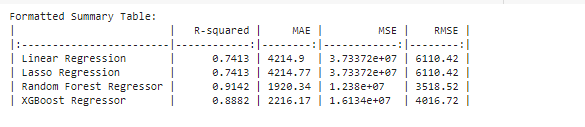
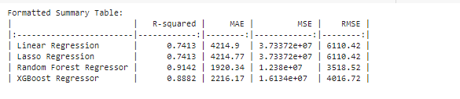

Linear Regression
Linear regression is a fundamental statistical method used to model the relationship between a dependent variable and one or more independent variables by fitting a linear equation to the observed data. The goal is to find the best-fitting straight line through the data points that minimizes the sum of the squared differences between the observed values and the values predicted by the line.This technique assumes a linear relationship between the dependent and independent variables, making it simple and easy to interpret. However, it is sensitive to outliers and can be less effective if the relationship between variables is non-linear.
Lasso Regression
Lasso (Least Absolute Shrinkage and Selection Operator) regression is an extension of linear regression that includes an L1 regularization term in the loss function. This penalty term is the absolute sum of the coefficients, which encourages the model to shrink some of the coefficients to exactly zero. As a result, Lasso performs both variable selection and regularization, which helps enhance the prediction accuracy and interpretability of the model. It's particularly useful in high-dimensional datasets where some features may be irrelevant or redundant, as it helps prevent overfitting and simplifies the model.
Random Forest Regressor
The Random Forest Regressor is an ensemble learning method that constructs a multitude of decision trees during training and outputs the average prediction of these trees. Each tree in the forest is built using a random subset of the data and features, which helps in making the model robust to overfitting. This technique captures complex, non-linear relationships and is less sensitive to noise and outliers in the data compared to individual decision trees. The random forest's ability to handle large datasets and provide feature importance rankings makes it a popular choice for various regression tasks.
XGBoost Regressor
XGBoost (Extreme Gradient Boosting) Regressor is a powerful and efficient implementation of the gradient boosting framework. It builds an ensemble of decision trees sequentially, where each new tree attempts to correct the errors of the previous trees by optimizing a loss function. XGBoost incorporates regularization terms to control model complexity and prevent overfitting, leading to better generalization on unseen data. Known for its high performance and scalability, XGBoost is widely used in machine learning competitions and real-world applications where accuracy and speed are crucial. Its ability to handle missing data and its flexibility with various objective functions add to its robustness and versatility.

 
